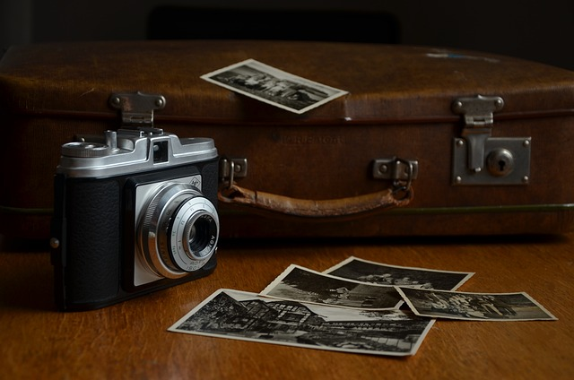

Equipo Esencial para Fotografia Digital
Una cámara, lentes adecuados y una tarjeta de memoria de calidad son cruciales para obtener las mejores fotos posibles.
- Cámara DSLR o Mirrorless
- Lentes de 50mm y teleobjetivo
- Tripode robusto
- Tarjeta de memoria de alta capacidad
Conceptos Básicos de Fotografía
Aprende sobre la exposición, la composición y la iluminación es fundamental para cualquier fotografo.
- Exposición: ISO, Apertura, Velocidad de obturación
- Composición: Regla de tercios, líneas principales
- iluminación: Luz Natural
Conceptos Prácticos para Fotografos Principiantes
Practica regularmente, experimienta con diferentes configuraciones y revisa tus imágenes para aprender de tus errores.
- Dispara en Formato RAW para mayor flexibilidad en la edición
- Mantén limpia la lente de tu cámara
- Revisa las fotos inmediatamente después de tomarlas 
Explora Más Técnicas Avanzadas de Fotografía
Continúa tu aprendizaje explorando nuestras guías sobre técnicas avanzadas y empieza a experimentar con tu creatividad.